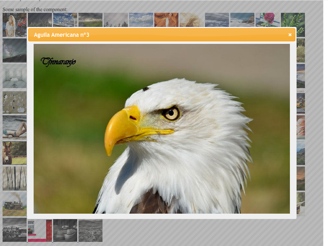

Leverage the jQuery plugin ecosystem
to create highly-interactive JSF Components
- Brian Leathem
- Senior Software Engineer, Red Hat
- 2012-06-25
- This lightning talk is about creating JSF Components with a focus on code re-usability and maximizing portability
JSF is...

Component-oriented
- JSF offers us a standardized component model for building web applications
- In the context of this talk, this component model provides us with a blueprint for building portable components we can "plug" into any JSF application
Building JSF Components

Traditionally Tricky business
- This is great, but JSF components are notoriously verbose to create
Split code-base
-
Server-side code
- Components
- Renderers
- xml junk!
-
-
Client-side code
- HTML
- CSS
- javascript
- For starters, we're dealing with a split code base.
- We not only have to create the server side code: Components, Renderers, and xml config
- We also have to create the client side pieces: the html, javascript, and CSS responsible for the component's behaviour and user-interactions
Lots of browsers

|

|
|

|

|
|

|

|
+ mobile!
- All this client-code then has to be tested in a in a multitude of browsers
- and don't forget to test on mobile devices too
The solution
- Re-use existing javascript "widgets"
- There is a huge potential for code re-use
-
-
Google search comparison:
-
JSF Component:
- ~ 3 Million hits
-
Javascript Component:
- ~ 416 Million hits
-
JSF Component:
- But I'm not here to complain, I'm here to share a solution
- You should be, and can easily be building JSF components using existing javascript "widgets"
- By widgets, I mean self-contained free standing javscript code that encapsulates a user interaction
- The important piece here is that these are self-contained components, framework independent, and not requiring any back-end nor framework code to operate
Image Gallery
- For example, look at this jQuery UI imagegallery widget
- It's a trivial widget, with a rich usr interface.
- To use it, you point the jQuery plugin at some correctly formatted html markup, and you end up with a fully functional, single-purpose image gallery
- click on an thumbnail to get a zoomed-in popup of the photo, with controls to navigate through the provided collection of photos
jQuery UI
- jQuery plugins can also be fairly non-trivial
- here we have the jQuery UI widget set, providing more complex functionality with tabs, datepickers, modal alerts, etc.
Bootstrap
- Another widget set generating a lot of excitement right now is the twitter Bootstrap project.
- Bootstrap takes a stronger focus on HTML and CSS for widget behaviour, but does incorporate some javascript as well
Image Gallery - Component
<!DOCTYPE html>
<html lang="en-US"
xmlns="http://www.w3.org/1999/xhtml"
xmlns:h="http://java.sun.com/jsf/html"
xmlns:ui="http://java.sun.com/jsf/facelets"
xmlns:cc="http://java.sun.com/jsf/composite">
<cc:interface>
<cc:attribute name="photos" />
<!-- plugin configuration -->
<cc:attribute name="selector" />
[ ... snip ... ]
<cc:attribute name="dialogClass" />
</cc:interface>
<cc:implementation>
<div id="#{cc.clientId}:div">
<ui:repeat value="#{cc.attrs.photos}" var="photo">
<a rel="gallery" href="#{photo.full}" title="#{photo.title}">
<img src="#{photo.thumb}" alt="#{photo.title}" />
</a>
</ui:repeat>
</div>
<h:outputScript library="javax.faces" name="jsf.js"/>
<h:outputScript library="composite/com.jquery" name="jquery-1.7.2.min.js"/>
<h:outputScript library="composite/com.jqueryui/js" name="jquery-ui-1.8.19.custom.min.js"/>
<h:outputScript library="composite/com.github.blueimp/js" name="load-image.js"/>
<h:outputScript library="composite/com.github.blueimp/js" name="jquery.image-gallery.js"/>
<h:outputStylesheet library="composite/com.jqueryui/css/ui-lightness" name="jquery-ui.custom.css"/>
<h:outputStylesheet library="composite/com.github.blueimp/css" name="jquery.image-gallery.css"/>
<h:outputScript>
var pluginOptions = {};
! '#{cc.attrs.selector}' || (pluginOptions.selector = '#{cc.attrs.selector}');
[ ... snip ... ]
! '#{cc.attrs.dialogClass}' || (pluginOptions.dialogClass = '#{cc.attrs.dialogClass}');
jQuery(function() {
$(document.getElementById('#{cc.clientId}:div')).imagegallery(pluginOptions);
});
</h:outputScript>
</cc:implementation>
</html>
-
Let's take a look at the code required to make a JSF 2 component out of these javascript widgets
- Here we have a JSF 2 composite component, and starts like any other JSF facelet file
-
- The composite component has 2 sections, and interface and an implementation
- In the interface we specify the attributes of the facelet tag
- The attributes consist of the list of photos we want to include in our gallery
- and all the options available to configure the jQuery plugin (which I've cut out for brevity)
- Next we have the html to generate: we loop of the photos list, and output an anchor tag for each photo
- We then map the component attributes into a javascript object
- which we then pass as an parameter when we invoke the jQuery plugin
Using the imagegallery component
<my:datepicker buttonImageOnly="true" dateFormat="yy-mm-dd" showOn="both"/>
- While the component gives a rich looking interface (I'd demo it if I had more time) it is in fact a simple "output-only" component
jQuery UI Datepicker component
<!DOCTYPE html>
<html lang="en-US"
xmlns="http://www.w3.org/1999/xhtml"
xmlns:h="http://java.sun.com/jsf/html"
xmlns:f="http://java.sun.com/jsf/core"
xmlns:ui="http://java.sun.com/jsf/facelets"
xmlns:cc="http://java.sun.com/jsf/composite">
<cc:interface>
<cc:attribute name="value" />
<cc:attribute name="showOn" />
<cc:attribute name="dateFormat" />
<cc:attribute name="buttonImageOnly" />
</cc:interface>
<cc:implementation>
<h:inputText id="input" value="#{cc.attrs.value}" />
<h:outputScript library="javax.faces" name="jsf.js"/>
<h:outputScript library="composite/com.jquery" name="jquery-1.7.2.min.js"/>
<h:outputScript library="composite/com.jqueryui/development-bundle/ui" name="jquery.ui.core.js"/>
<h:outputScript library="composite/com.jqueryui/development-bundle/ui" name="jquery.ui.widget.js"/>
<h:outputScript library="composite/com.jqueryui/development-bundle/ui" name="jquery.ui.datepicker.js"/>
<h:outputStylesheet library="composite/com.jqueryui/css/ui-lightness" name="jquery-ui.custom.css"/>
<h:outputScript>
var pluginOptions = {
buttonImage: "#{request.contextPath}/javax.faces.resource/calendar.gif.jsf?ln=composite/org.richfaces",
buttonImageOnly: "#{"true" eq cc.attrs.buttonImageOnly}"
}
! '#{cc.attrs.showOn}' || (pluginOptions.showOn = '#{cc.attrs.showOn}');
! '#{cc.attrs.dateFormat}' || (pluginOptions.dateFormat = '#{cc.attrs.dateFormat}');
jQuery(function() {
$(document.getElementById('#{cc.clientId}:input')).datepicker(pluginOptions);
});
</h:outputScript>
</cc:implementation>
</html>
- let's look at the implementation of a component that accept user input - the datepicker
- This composite component follows nearly the same pattern as previous except for one difference:
- We are delegate to the JSF input component to return the widget data back to the JSF servlet
- The point I want to make is that so long as you can find a JSF component to delegate to you can write a JSF component leveraging any
RichFaces CDK
Use the RichFaces CDK to build "full-fledged" JSF components with the ease and syntax of JSF 2 composite components
- The RichFaces CDK templating language is modeled after JSF 2 composite components
- However when you use the RichFaces CDK, the template is rendererd into Java code at runtime
- You end up with "full-fledged" jsf components, free of any limitations of the composite component way of building components
- Feel free to speak to me if you want to hear more about the CDK, or attend my talk in 2 weeks at JAX
This is bigger than JSF
- Polyglot JVM
- Web frameworks in many languages/environments
- Consistent L&F throughout a heterogeneous application
- A Final motivation for building components on top of standalone javascript widgets - even when creating brand-new widgets
- In this world of ployglot on the JVM, and hetergenous server environments, it's not uncommon to have a single application spread accross multiple frameworks
- By using a consistent set of HTML markup, CSS, and javascript to enrich your application
- you can achieve a consistent L&F for your users irrespective of the back-end technology
Call to action!
All JBoss projects with UI building capabilities should coordinate and identify a common strategy for building client "widgets"
Let's empower our users to build heterogeneous JBoss applications with a consistent L&F!
- So I'd like to extend an invitation to all framework providers at JBoss to come together and standardize on a set of javascript widgets
- in this way we can empower our users to build heterogeneous JBoss applications with a consistent L&F!
Links
- RichFaces Sandbox on github
- Blog Collapsible panel w/ Composite Components
- JSF Composite component API docs:
- Javascript "widgets"